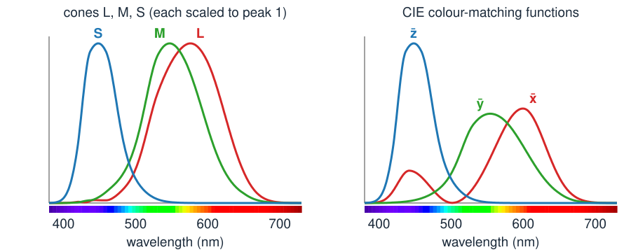
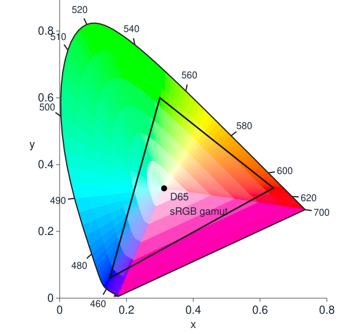

So far a colour image was “an M \times N \times 3 array”. Today: what the three numbers mean, and why there are three.
Light is a spectrum: power at every wavelength, far more than three numbers.
The eye (or a camera) reduces it to three responses: a linear map with a large blind spot.
Different spectra with the same three numbers: metamers. They are why screens work, and why cameras and eyes disagree.
CIE XYZ and the chromaticity diagram: a map of all colours; mixtures lie on straight lines; a display reaches a triangle.
Slides titled The math give the formulas and proofs; the ideas are complete without them.
Colour is not in the light alone
Two lamps look the same white, yet a red apple looks different under them.
Two fabrics look identical to us, but different in a photo.
A colour-blind colleague cannot tell two cables apart that you can.
In each case different light gives the same colour to one observer and not to another. To understand why, follow the light from the lamp to the three numbers.
Light is a spectrum
The light reaching a point of the eye or the sensor is a spectrums(\lambda): power at each wavelength from about 380 nm (violet) to 730 nm (deep red).
Daylight: smooth, power everywhere. A light bulb (a hot filament): rises towards the red. A white LED: a sharp blue peak plus a broad yellow hump. A laser: one line.
A surface reflects a fraction r(\lambda) of each wavelength; what we see from it is s(\lambda)\,r(\lambda): lamp times reflectance.
Sample the spectrum every 10 nm: 36 numbers. Real spectra need that many, or more.
So the input is a vector with 36 (or more) entries. The output of the eye is three numbers.
Three cone types

The retina has three kinds of cones: L (long), M (medium), S (short wavelengths).
Each cone adds up the light, weighted by its sensitivity curve: L = \sum_\lambda s(\lambda)\,\bar l(\lambda), and so on.
The curves are broad and overlap: L and M are almost the same.
A camera does the same with three filters R, G, B; its curves are different.
The math: colour vision is a 3 × 36 matrix
Sample at 10 nm, \lambda_j = 380, 390, \dots, 730: a spectrum is \mathbf s \in \mathbb R^{36}, and
\mathbf c = \begin{pmatrix} L \\ M \\ S \end{pmatrix} = A\,\mathbf s, \qquad A = \begin{pmatrix} \bar l(\lambda_1) & \cdots & \bar l(\lambda_{36}) \\ \bar m(\lambda_1) & \cdots & \bar m(\lambda_{36}) \\ \bar s(\lambda_1) & \cdots & \bar s(\lambda_{36}) \end{pmatrix} \Delta\lambda .
The integral \int s(\lambda)\,\bar l(\lambda)\,d\lambda becomes a dot product of two vectors: row 1 of A times \mathbf s.
A is 3 \times 36 of rank 3: the eye is a linear map \mathbb R^{36} \to \mathbb R^3.
A camera: \mathbf c_\text{cam} = A_\text{cam}\,\mathbf s, another 3 \times 36 matrix. A surface under a lamp: \mathbf c = A\,\operatorname{diag}(\mathbf e)\,\mathbf r, lamp \mathbf e, reflectance \mathbf r.
Try it: from a spectrum to three numbers
Metamers
Many spectra give the same three numbers: they are metamers, and they look identical.
36 numbers in, 3 out: the eye throws away almost everything. Any change of the spectrum that all three cones are blind to goes unnoticed.
Those invisible changes form a huge set: wiggles that add a bit of light at some wavelengths and remove the same “cone-weighted” amount at others.
Why screens work: a display has only three primaries, yet it can produce a metamer of the light from (most) real scenes. The spectrum on the screen is nothing like the scene’s.
Constraint: a spectrum cannot be negative. A metamer must stay \ge 0 everywhere.
Rank–nullity: \dim\ker A = 36 - 3 = 33. Every spectrum has a 33-dimensional family of metamers (cut down by \mathbf s_2 \ge \mathbf 0).
Projector onto \ker A (for A of full row rank): P = I - A^\top (AA^\top)^{-1} A. Check: AP = A - AA^\top(AA^\top)^{-1}A = 0.
Making a metamer: take any vector \mathbf v, then \mathbf s_2 = \mathbf s_1 + t\,P\mathbf v, with t as large as the constraint \mathbf s_2 \ge \mathbf 0 allows. This is the demo’s make a metamer button.
When metamers break
A match holds for one observer under one light:
A different observer. A camera has A_\text{cam} \ne A, with a different blind set: a pair that matches for the eye differs in the photo.
A colour-blind observer. A deuteranope has no M cones: two numbers instead of three. More pairs match: everything that only the M cones could tell apart.
A different lamp (metameric failure). Two fabrics match in daylight; under a light bulb the lamp re-weights the wavelengths, and they no longer match.
Metamerism is the reason colour in images is never “the” colour of an object: it is the colour for this camera, under this light.
Colour matching: how the eye was measured
Before cones could be measured, the eye was characterised by matching (Wright and Guild, 1920s):
An observer sees a test light on one half of a field and adjusts three primary lights (red, green, blue) on the other half until the two halves look the same.
Done for every wavelength: three colour-matching functions\bar r(\lambda), \bar g(\lambda), \bar b(\lambda), the amounts needed.
Surprise: for many test wavelengths no match is possible. One primary must be moved to the test side: a negative amount.
Three numbers per wavelength again: the matching functions describe the same three-dimensional information as the cones, in another basis.
CIE XYZ: a standard basis
The CIE (1931) chose a new basis of the same three-dimensional space with two convenient properties:
the three functions \bar x, \bar y, \bar z are never negative, so every real light has X, Y, Z \ge 0;
\bar y is the eye’s brightness sensitivity, so Y is the luminance: how bright the light looks.
The price: the XYZ “primaries” are not real lights. XYZ is a coordinate system for colours, the common reference for every device.
The math: XYZ is a change of basis
Cones, colour-matching functions and \bar x \bar y \bar z are three bases of the same row space of A:
\begin{pmatrix} \bar l \\ \bar m \\ \bar s \end{pmatrix} = T \begin{pmatrix} \bar x \\ \bar y \\ \bar z \end{pmatrix} \;\Rightarrow\; \begin{pmatrix} L \\ M \\ S \end{pmatrix} = T \begin{pmatrix} X \\ Y \\ Z \end{pmatrix}, \quad T = \begin{pmatrix} 0.4002 & 0.7076 & -0.0808 \\ -0.2263 & 1.1653 & 0.0457 \\ 0 & 0 & 0.9182 \end{pmatrix}.
T is invertible, so the null spaces agree: metamers for XYZ = metamers for the cones.
The same holds for \bar r\bar g\bar b: a matching experiment measures A up to an invertible 3 \times 3 matrix. Negative entries of \bar r\bar g\bar b just mean a basis that is not inside the cone of real lights.
Chromaticity: forget the brightness

Twice the light, same colour: divide out the brightness.
x = \frac{X}{X+Y+Z}, \qquad y = \frac{Y}{X+Y+Z}
Every colour becomes a point (x, y): the chromaticity diagram.
Monochromatic lights trace the horseshoe (the spectral locus, wavelengths marked); the straight purple line closes it.
All real colours lie inside. White (daylight D65) is near the middle, at (0.313, 0.329).
The math: a central projection, and mixtures on straight lines
(x, y, z) = (X, Y, Z)/(X+Y+Z) is the central projection of XYZ space onto the plane X + Y + Z = 1 (as homogeneous coordinates: scaling a colour does not move it).
Mixing two lights adds their XYZ: \mathbf C = \mathbf C_1 + \mathbf C_2. With S_i = X_i + Y_i + Z_i,
A convex combination: the mixture lies on the segment between the two chromaticities, at a position weighted by S_i (not by luminance Y_i).
Three primaries: all non-negative mixtures fill the triangle they span. Monochromatic lights are the extreme points, so the horseshoe region is convex.
Gamuts: a display is a triangle
A display mixes three primaries R, G, B with amounts between 0 and 1: it reaches exactly the triangle of their chromaticities, its gamut.
sRGB (most screens, the web): a modest triangle. Display P3 (newer phones and laptops): a larger green and red. Rec. 2020 (ultra-HD video): primaries almost on the horseshoe, as only lasers can produce.
No triangle with real primaries covers the horseshoe: some colours (saturated cyans, spectral greens) no display can show.
A colour outside the gamut needs a negative amount of a primary: it must be clipped or mapped inwards.
Try it: the chromaticity diagram
Summary
Light is a spectrum; the eye and the camera reduce it to three numbers by weighted sums: a linear map of rank 3.
Metamers: different spectra with the same three numbers. They make displays possible, and break for another camera, a colour-blind viewer or another lamp.
CIE XYZ: a standard basis with X, Y, Z \ge 0 and Y = luminance; a change of basis of the cones.
Chromaticity(x, y) drops the brightness. Mixtures lie on straight lines; a display reaches a triangle, its gamut.
Next unit: what the numbers stored in an RGB image mean, and why they are not proportional to light.